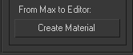
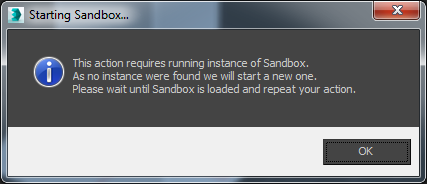
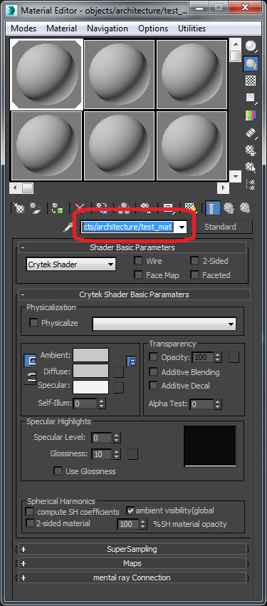
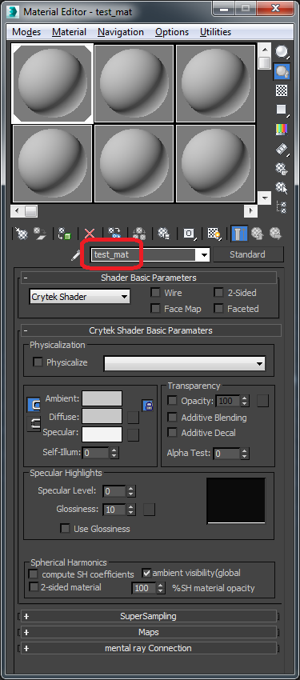
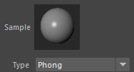
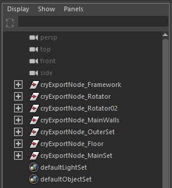
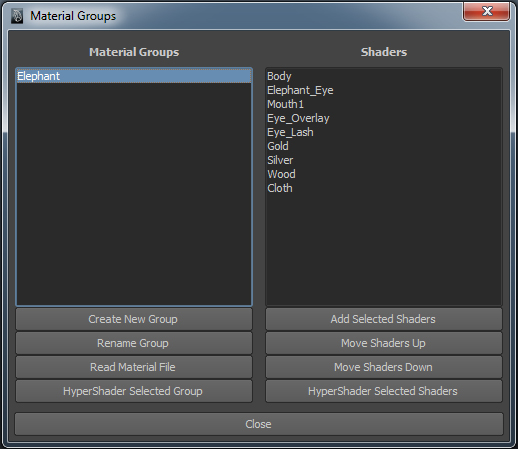
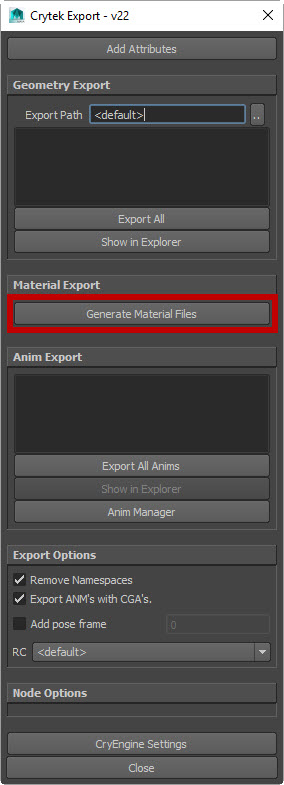
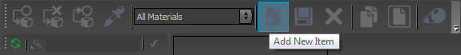

Overview
To use a model in the CRYENGINE you need a material (*.mtl) file to specify texture and shader settings. The material setup is partly done in the DCC package and partly done in Sandbox, with the adjustments in the Material Editor defining the look of the material.
The material setup in the DCC tools is only used to associate the polygons with a certain material and to assign a physics value to a polygon, if needed.
The connection between the asset and the material is the name of the material assigned to the object in the DCC tool and the name of the *.mtl file loaded by the engine. CRYENGINE will automatically look for the *.mtl file in the same folder as the asset, unless the material is absolutely pathed in the DCC tool.
Sample Files
- Sample .max file: bushes.max
- Sample *.mtl file: bush_small_leaf.mtl
- Sample .cgf file: bush_small_leaf.cgf
Setup in 3ds Max
To create the *.mtl file press this button in your export dialog while your material is selected:
Pic1: Create Material button 
This will open the Material Editor in CRYENGINE Sandbox (or start CRYENGINE Sandbox if it's not yet running).
Pic2: Starting Sandbox 
It will also open a file dialog which will allow you to name your material file and place it in an appropriate folder.
Two important considerations here are that the material should be created in the same folder as the *.cgf model (unless the material is 
It's very important that the name of the *.mtl file is the same as the name of the material in 3ds Max. If this is not the case, Sandbox will not be able to find the *.mtl file.
Pic3: Name of material file matching name in DCC tool 
Setup in Maya
Maya handles materials in a slightly different way than 3ds Max, which is why you will notice the material grouping system required for setup of assets. If you have used Max you will noticed it is fairly similar to the multi-sub-material system used in Max.
Pic4: Materials in Maya 
Introduction
Here are some things you should keep in mind when getting started.
- Use Phong materials.
- The Add Attributes button on the export window will add the physics options to the shaders 'Extra Attributes'. Use Maya's Attribute Editor to edit them.
- A scene can have no more than 32 materials.
- Materials should be assigned in Maya but the editing should be done in Sandbox.
- It is recommended that if objects will be sharing materials then they should be in the same scene when exported such as:
Pic5: Objects sharing materials in same scene
Material Setup
- After clicking Add Attributes you can click the Crytek Panel then the Mat.Ed Icon to open the Material Groups editor.
Pic6: Crytek panel
Pic7: Material Groups editor
- In this window, click Create New Group and begin adding Shaders from the Hypershade.
- Once you are done with your material you can go back to the Crytek Export window and click Generate Material Files to create a material file in the same folder as the scene is saved.
Pic8: Generate Material Files button
Setup in CRYENGINE
In the CRYENGINE Sandbox Editor you can open the Material Editor by going to Tools -> Material Editor.
With the Material Editor open, click on Add New Item in the toolbar to create a new material.
Pic9: Add New Item in Material Editor 
This will open a file dialog where you can select the folder where you want to create the material and the name of the material.
After clicking Save, your new material will be created with a set of default values and you can modify/save the file directly from the Material Editor.